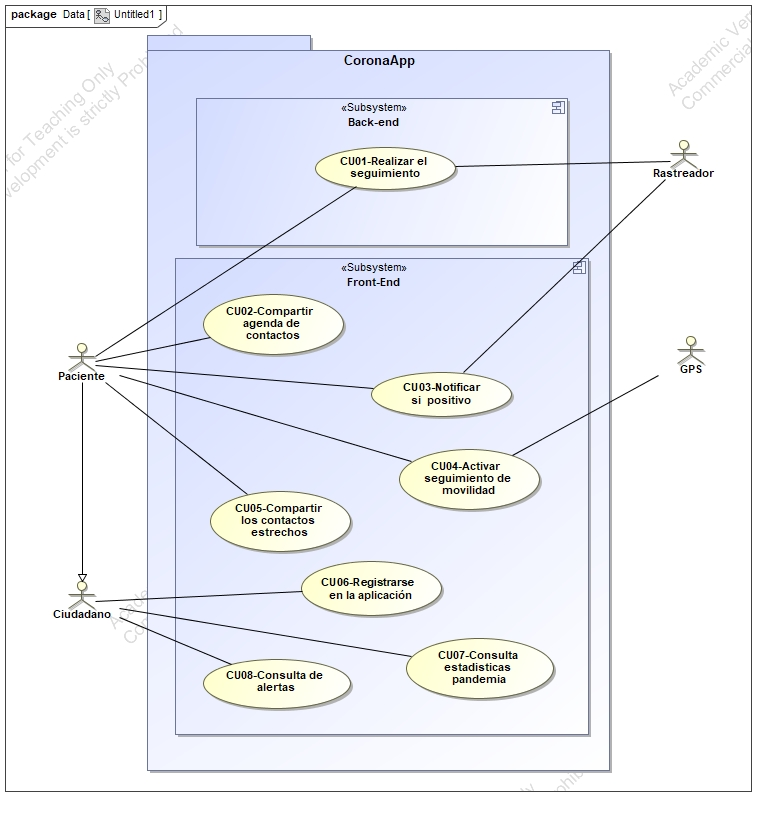

Mi nombre es
Daniel Moreno Aljaro
Actualmente soy estudiante de
Ingenieria Informatica
- Universidad Jaume I -
He ejercido como desarrollador web en varias empresas, especialmente backend.
Contenido Ejercicio 2
Reflexion E1
En este apartado vamos a reflexionar sobre la entrevista realizada en la anterior sesión, del caso práctico 'CoronaApp', realizada junto a mi compañero Alejandro. Para el desarrollo de la entrevista nos planteamos con anterioridad un pequeño esquema para organizarnos cada punto que debíamos incluir en nuestra entrevista. Esto fue indispensable para llevar a cabo las exigencias del caso práctico 'CoronaApp' donde un analista entrevista al programador respecto a una aplicación en este caso solo para móvil para gestionar los posibles contagios y alertas por COVID-19. Se puede decir que uno de los puntos para la valoración de nuestra entrevista no lo hemos tenido en cuenta debido a que ambos no disponíamos de mucho tiempo para realizar una entrevista más presencial y, ya que debido a las condiciones de la pandemia no es posible reunirse para realizar una entrevista al aire libre, y por ello hemos tenido que recurrir a realizar la entrevista mediante uno de los servicios de GOOGLE llamado “meet”. Hemos percibido que el desarrollo de la entrevista ha sido fluido, al principio como es normal hemos tenido que revisar el esquema de la entrevista para ajustarla lo máximo posible a los requerimientos que se nos solicitaba, pero finalmente hemos quedado satisfecho con el resultado obtenido en la entrevista.
Analisis del video entrevista
En este apartado vamos a evaluar nuestra entrevista realizada en la sesión anterior según los criterios que podemos encontrar en las transparencias 14-17 del tema 2 de teoría. El caso práctico que desarrolla la entrevista es el caso “CoronaApp” y por el cual se plantearon las cuestiones a desarrollar por ambas partes a lo largo de la entrevista. En primer lugar hay que mencionar que las condiciones de imagen y sonido son correctas para una buena interpretación posterior, ya que en el caso de consultar la entrevista es necesario interpretar correctamente cada punto. El lenguaje no verbal es correcto tanto por parte del entrevistador como del entrevistado, y sobre todo se ha podido desarrollar sin interrupciones. El ritmo de la entrevista ha sido fluido por parte de ambos y cada punto se ha remarcado correctamente antes de pasar al siguiente. Por parte del guión se puede mencionar que ha detallado cada uno de los puntos remarcables que lleva el caso práctico y que no deja lugar a posibles dudas durante el desarrollo de la misma. Un punto no tan negativo pero a tener en cuenta puede ser el lugar escogido para realizar la entrevista, donde por cuestiones de tiempo y coordinación se ha elegido realizarlo mediante videollamada en lugar de una entrevista en un espacio abierto. Al inicio de la entrevista ambos se han presentado y mencionado los roles que ambos representan, y que a lo largo de la entrevista se ha sabido interpretar correctamente. Para concluir el análisis, podemos decir que a nivel técnico la entrevista es bastante completa, donde se han repasado cada uno de los puntos más destacables y no deja preguntas abiertas que puedan entorpecer las siguientes etapas del desarrollo de esta misma. Se ha percibido cierta rigidez, por parte del entrevistador como por parte del entrevistado, donde se puede ver seguros y ha quedado bastante claro la finalidad y los objetivos de la misma aplicación.
Diseño de caso de uso
Caso practico CoronaApp
Especificacion de caso de uso CoronaApp
|
Identificador |
C07 |
|
Nom |
Consultar estadisticas pandemia regalo |
|
Versió |
0.1 |
|
Autors |
Daniel Moreno Aljaro |
|
Fonts |
Daniel Moreno Aljaro |
|
Descripció |
El sistema tiene que permitir tanto a los ciudadanos como a los pacientes consultar las estadísticas sobre la pandemia a nivel estatal y por comunidades respecto a los numeros de casos, incidencias, etc... |
|
Abast |
Implementar una opcion que permita visualizar las estadisticas. |
|
Nivell |
Tarea principal |
|
Actor principal |
Ciudadano, Paciente |
|
Actors secundaris |
Ninguno |
|
Relacions |
Ninguno |
|
Precondició |
|
|
Condició fi amb èxit |
|
|
Condició fi amb fracàs |
|
|
Trigger |
Presionar el botón que acceda a la ventana de estadísticas |
|
Seqüència normal |
Acció |
|
1 |
Estando en la pantalla principal de la aplicación. |
|
2 |
El propio usuario(Ciudadano/Paciente) accede desde el botón “Ver estadisticas”. |
|
3 |
Se muestran de forma ordenada cada una de las estadisticas, tanto los casos por comunidad como el numero de indicidencias de cada comunidad. |
|
4 |
Una vez visualizada las estadisticas retrocede pulsando el boton de "Home". |
|
Excepcions 7 |
Excepció |
|
1 |
Problemas con la aplicacion. |
|
1.1 |
Error para contactar con los servidores. |
|
1.2 |
Error en la aplicacion inducidor por otras aplicaciones. |
|
2 |
No hay conexion a internet. |
|
Freqüència esperada |
25 veces / semana |
|
Importància |
Necesario |
|
Prioritat |
curt termini |
|
Comentaris |
|
Prototipo de caso de uso anterior